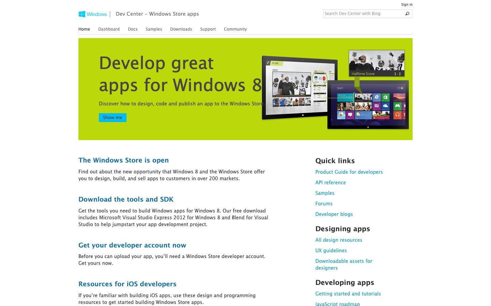

References / Website / 390
Windows Dev Center website, 2012
Microsoft’s developer page for Windows 8 apps: a lime-green hero band, a flat cyan button, and plain link columns.
- Source
- msdn.microsoft.com, Windows Dev Center – Windows Store apps (archived copy)
- Creator
- Microsoft
- Made
- 2012
- Style
- Flat design (agent-proposed, not yet reviewed by a person)
- Moods
- Clean, bright, technical
- Evidence
- Captured with
tools/capture.mjs(headless Chrome, 1440 × 900) on 28 September 2026 from the Wayback Machine copy of 14 November 2012, and inspected. The screenshot shows the first viewport; the measurement covers up to four screens. Nothing covers the page. Segoe UI is not installed on the capture machine, so text that the archive did not serve as a web font renders in a fallback sans-serif. - Reviewed
- Rights
- Third-party work, stored with credit for commentary. License: unverified. Rights policy
Observed
- A white header holds the cyan Windows logo and “Dev Center – Windows Store apps”, a thin outlined search field, and plain navigation words above a thin gray rule.
- A full-width lime-green band has the headline “Develop great apps for Windows 8” in large dark gray type, one line of text, and a small square cyan “Show me” button.
- Product images on the band show the Windows 8 Start screen with colored tiles.
- Below, blue headings and paragraphs run in one column; the right column has black headings with lists of cyan links.
Why it belongs
Measured: the headings are set in weight 100, which the fallback face does not show. Only 4 boxes are filled or bordered, and 3 of them carry a 1 px rule or field border, so the border share is 0.75 and the capture fails the border range.
Borrow
Use one bright secondary hue, such as lime, as a full-width band behind dark gray text instead of white text.
Measured
Machine-extracted by tools/extract-traits.js on . Full measurement.
- Type families
- Segoe UI (85%), Segoe UI Semibold (13%), Segoe UI Light (2%)
- Type scale ratio
- 1.27
- Median radius
- 0 px
- Mean chroma
- 0.04
- Palette
- #ffffff 79%
- #454545 10%
- #1ca0da 4%
- #707070 4%
- #1570a6 2%
- #2a2a2a 1%
- #00bcf2 0%

